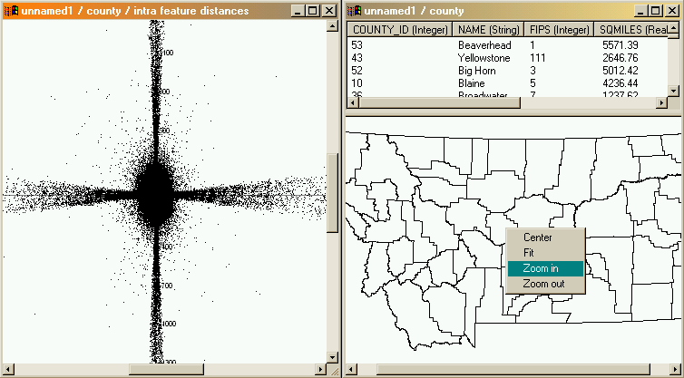
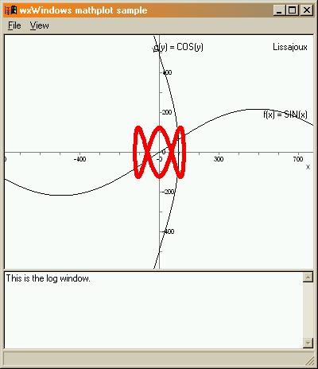

This shows wxMathPlot in use with a GIS tool. The left window shows a plot of the distribution of geo feature difference vectors (with a derivation of mpFXY), the right side shows a map plottet by mpWindow (with a derivation of mpLayer).

The output generated by the supplied example mp1: uses mpFX, mpFY and mpFXY.